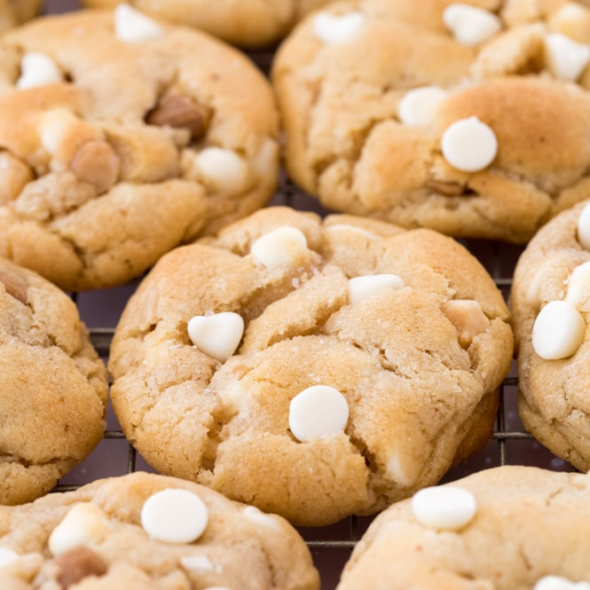

White Chocolate Macadamia Nut Cookies

Soft Baked White Chocolate Macadamia Nut Cookies
These soft baked cookies are loaded with flavor.
Ingreditents
- 2 cups & 2 tablespoons all-purpose flour
- 1 teaspoon cornstarch
- 1 teaspoon baking soda
- 1/2 teaspoon salt
- 3/4 cup unsalted butter, melted and slightly cooled
- 3/4 cup packed light brown sugar
- 3/4 cup granulated sugar
- 1 large egg & 1 egg yolk
- 1 1/2 teaspoon pure vanilla extract
- 1 cup white chocolate chips
- 1 cup roughly chopped macadamia nuts
Steps
- Preheat over to 350 F.
- Whisk flour, cornstarch, baking soda, and salt together in a large bowl. Set aside./li>
- Wisk melted butter, brown sugar, granulated sugar, egg, egg yolk, and vanilla extract until combined.
- Pour into dry ingredients and mix until completely combined.
- Fold in the white chocolate chops and macadamia nuts.
- Cover and chill the dough in the refrigerator for at least 2 hours.
- Allow to sit at room temperature for at least 20 minutes before rolling and baking.
- Roll cookie dough into balls, approx 1-1.5 tablespoons per cookie.
- Arrange cookies 3 inches apart on the baking sheet.
- Bake for 12-13 minutes or until likely browned on the sides.
- Remove from the oven and allow cookies to cool on the baking sheet for 5 minutes.
- Transfer the cookies to a wire rack to cool completely.